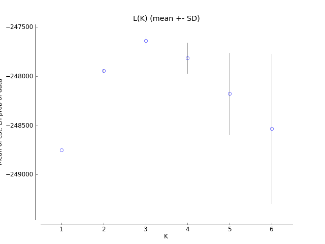
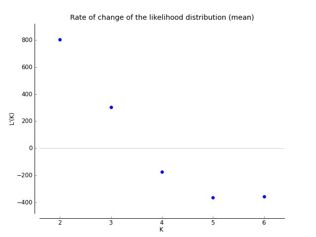
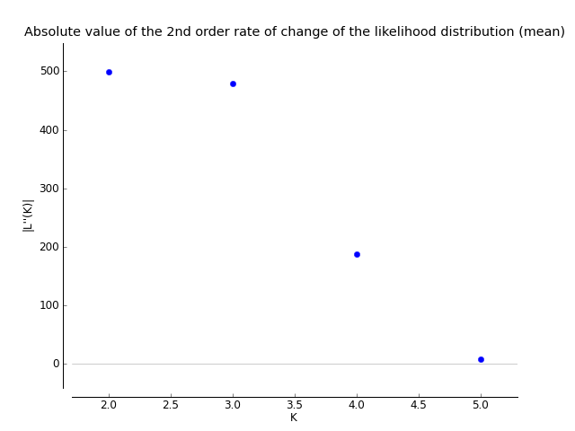

Job falling-dream-173a
This output file was generated at:
2020-Aug-15 14:05:36 PDT
This document is not permanent. It will automatically be removed from the server in seven (7) days. Please save or print it for your records. If images are missing, try reloading; this sometimes happens under heavy server load.
Single file archive including this page, all images, all clumpp files: download. [.tar.gz]
L(K)
Clumpp files
K = 1 Clumpp indfile K = 1 Clumpp popfile
K = 2 Clumpp indfile K = 2 Clumpp popfile
K = 3 Clumpp indfile K = 3 Clumpp popfile
K = 4 Clumpp indfile K = 4 Clumpp popfile
Evanno method
*Evanno et al., 2005. Molecular Ecology 14, 2611 - 2620. How are we calculating this? Look at the FAQ.


The Evanno table output is also available as a tab-delimited text file (for use with Excel) here.
| K | Reps | Mean LnP(K) | Stdev LnP(K) | Ln'(K) | |Ln''(K)| | Delta K |
|---|---|---|---|---|---|---|
| 1 | 10 | -248748.370000 | 0.656675 | — | — | — |
| 2 | 10 | -247944.990000 | 16.961424 | 803.380000 | 498.870000 | 29.412036 |
| 3 | 10 | -247640.480000 | 45.708613 | 304.510000 | 479.600000 | 10.492552 |
| 4 | 10 | -247815.570000 | 153.350434 | -175.090000 | 188.310000 | 1.227972 |
| 5 | 10 | -248178.970000 | 416.154165 | -363.400000 | 8.390000 | 0.020161 |
| 6 | 10 | -248533.980000 | 758.177367 | -355.010000 | — | — |
Raw STRUCTURE output
The raw STRUCTURE output is also available as a tab-delimited text file (for use with Excel) here.
| File name | Run # | K | Est. Ln prob. of data | Mean value of Ln likelihood | Variance of Ln likelihood |
|---|---|---|---|---|---|
| 10k_20k_adm_corr_rep2_run_2_f | 2 | 1 | -248748.3 | -248668.6 | 159.3 |
| 10k_20k_adm_corr_rep2_run_14_f | 14 | 1 | -248748.4 | -248668.6 | 159.5 |
| 10k_20k_adm_corr_rep2_run_15_f | 15 | 1 | -248749.1 | -248668.9 | 160.6 |
| 10k_20k_adm_corr_rep2_run_13_f | 13 | 1 | -248748.0 | -248668.7 | 158.6 |
| 10k_20k_adm_corr_run_1_f | 1 | 1 | -248749.1 | -248668.7 | 160.8 |
| 10k_20k_adm_corr_run_7_f | 7 | 1 | -248746.9 | -248668.7 | 156.4 |
| 10k_20k_adm_corr_run_9_f | 9 | 1 | -248748.6 | -248668.6 | 159.9 |
| 10k_20k_adm_corr_rep2_run_1_f | 1 | 1 | -248748.6 | -248668.7 | 159.8 |
| 10k_20k_adm_corr_run_8_f | 8 | 1 | -248748.8 | -248668.7 | 160.2 |
| 10k_20k_adm_corr_run_10_f | 10 | 1 | -248747.9 | -248668.6 | 158.6 |
| 10k_20k_adm_corr_rep2_run_18_f | 18 | 2 | -247939.5 | -247480.2 | 918.6 |
| 10k_20k_adm_corr_rep2_run_4_f | 4 | 2 | -247942.9 | -247481.2 | 923.3 |
| 10k_20k_adm_corr_run_11_f | 11 | 2 | -247972.4 | -247480.7 | 983.3 |
| 10k_20k_adm_corr_rep2_run_17_f | 17 | 2 | -247949.0 | -247484.1 | 929.9 |
| 10k_20k_adm_corr_rep2_run_16_f | 16 | 2 | -247964.5 | -247477.1 | 974.8 |
| 10k_20k_adm_corr_rep2_run_3_f | 3 | 2 | -247958.3 | -247478.1 | 960.4 |
| 10k_20k_adm_corr_run_14_f | 14 | 2 | -247928.4 | -247478.4 | 900.1 |
| 10k_20k_adm_corr_run_13_f | 13 | 2 | -247915.4 | -247475.1 | 880.7 |
| 10k_20k_adm_corr_run_2_f | 2 | 2 | -247943.2 | -247477.6 | 931.2 |
| 10k_20k_adm_corr_run_12_f | 12 | 2 | -247936.3 | -247477.3 | 918.1 |
| 10k_20k_adm_corr_run_17_f | 17 | 3 | -247611.0 | -246790.4 | 1641.1 |
| 10k_20k_adm_corr_rep2_run_19_f | 19 | 3 | -247586.7 | -246794.5 | 1584.4 |
| 10k_20k_adm_corr_run_3_f | 3 | 3 | -247629.6 | -246791.9 | 1675.5 |
| 10k_20k_adm_corr_rep2_run_6_f | 6 | 3 | -247627.6 | -246795.2 | 1664.8 |
| 10k_20k_adm_corr_rep2_run_5_f | 5 | 3 | -247730.5 | -246802.9 | 1855.1 |
| 10k_20k_adm_corr_run_18_f | 18 | 3 | -247619.1 | -246795.8 | 1646.6 |
| 10k_20k_adm_corr_run_15_f | 15 | 3 | -247713.0 | -246794.0 | 1838.1 |
| 10k_20k_adm_corr_rep2_run_21_f | 21 | 3 | -247624.1 | -246792.8 | 1662.7 |
| 10k_20k_adm_corr_run_16_f | 16 | 3 | -247647.6 | -246802.5 | 1690.2 |
| 10k_20k_adm_corr_rep2_run_20_f | 20 | 3 | -247615.6 | -246798.6 | 1634.1 |
| 10k_20k_adm_corr_run_19_f | 19 | 4 | -247558.2 | -246432.8 | 2250.8 |
| 10k_20k_adm_corr_run_21_f | 21 | 4 | -247634.1 | -246431.0 | 2406.3 |
| 10k_20k_adm_corr_rep2_run_24_f | 24 | 4 | -247720.0 | -246454.0 | 2532.1 |
| 10k_20k_adm_corr_run_4_f | 4 | 4 | -247759.0 | -246458.6 | 2601.0 |
| 10k_20k_adm_corr_rep2_run_22_f | 22 | 4 | -247972.3 | -246453.4 | 3037.9 |
| 10k_20k_adm_corr_run_22_f | 22 | 4 | -247795.8 | -246444.7 | 2702.2 |
| 10k_20k_adm_corr_rep2_run_7_f | 7 | 4 | -247811.6 | -246464.7 | 2693.9 |
| 10k_20k_adm_corr_rep2_run_8_f | 8 | 4 | -247910.1 | -246452.8 | 2914.7 |
| 10k_20k_adm_corr_run_20_f | 20 | 4 | -248006.9 | -246451.5 | 3110.8 |
| 10k_20k_adm_corr_rep2_run_23_f | 23 | 4 | -247987.7 | -246442.3 | 3090.8 |
| 10k_20k_adm_corr_run_5_f | 5 | 5 | -247908.8 | -246108.8 | 3600.1 |
| 10k_20k_adm_corr_rep2_run_25_f | 25 | 5 | -248442.2 | -246137.1 | 4610.2 |
| 10k_20k_adm_corr_rep2_run_27_f | 27 | 5 | -247520.9 | -246109.5 | 2822.8 |
| 10k_20k_adm_corr_rep2_run_9_f | 9 | 5 | -248235.2 | -246082.8 | 4304.9 |
| 10k_20k_adm_corr_run_24_f | 24 | 5 | -247757.4 | -246089.0 | 3336.8 |
| 10k_20k_adm_corr_run_26_f | 26 | 5 | -248353.9 | -246118.8 | 4470.2 |
| 10k_20k_adm_corr_run_25_f | 25 | 5 | -248780.3 | -246118.5 | 5323.6 |
| 10k_20k_adm_corr_rep2_run_10_f | 10 | 5 | -248486.1 | -246128.1 | 4716.1 |
| 10k_20k_adm_corr_rep2_run_26_f | 26 | 5 | -248549.0 | -246119.3 | 4859.2 |
| 10k_20k_adm_corr_run_23_f | 23 | 5 | -247755.9 | -246119.1 | 3273.6 |
| 10k_20k_adm_corr_rep2_run_12_f | 12 | 6 | -248487.7 | -245861.6 | 5252.3 |
| 10k_20k_adm_corr_rep2_run_29_f | 29 | 6 | -248275.3 | -245864.8 | 4820.9 |
| 10k_20k_adm_corr_run_6_f | 6 | 6 | -247860.4 | -245873.7 | 3973.5 |
| 10k_20k_adm_corr_run_29_f | 29 | 6 | -247768.2 | -245861.7 | 3812.9 |
| 10k_20k_adm_corr_rep2_run_28_f | 28 | 6 | -247696.3 | -245854.9 | 3682.8 |
| 10k_20k_adm_corr_rep2_run_11_f | 11 | 6 | -248185.0 | -245831.2 | 4707.7 |
| 10k_20k_adm_corr_run_27_f | 27 | 6 | -248861.0 | -245875.5 | 5970.9 |
| 10k_20k_adm_corr_run_30_f | 30 | 6 | -249306.1 | -245876.9 | 6858.3 |
| 10k_20k_adm_corr_run_28_f | 28 | 6 | -248794.2 | -245885.0 | 5818.4 |
| 10k_20k_adm_corr_rep2_run_30_f | 30 | 6 | -250105.6 | -245866.2 | 8478.8 |
CITATION
Earl, Dent A. and vonHoldt, Bridgett M. (2012) STRUCTURE HARVESTER: a website and program for visualizing STRUCTURE output and implementing the Evanno method. Conservation Genetics Resources vol. 4 (2) pp. 359-361 doi: 10.1007/s12686-011-9548-7 Core version: vA.2 July 2014 Plot version: vA.1 November 2012 Web version: v0.6.94 July 2014